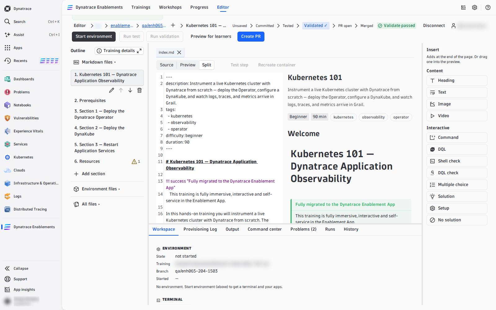
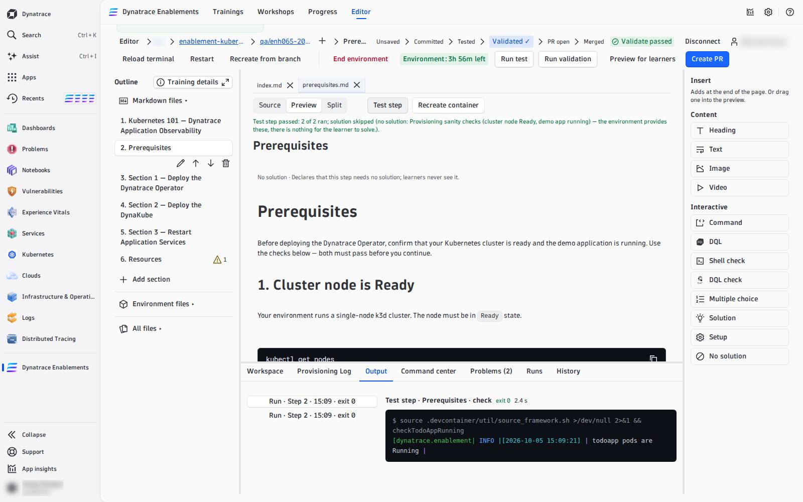

04 — Write and Test Steps#
A training is Markdown pages — one step per page in mkdocs.yaml's nav — with interactive blocks between the prose. You write them in the document pane and test each one against your environment before you commit.
Write#
Pick a step in the Outline (left). Above the document, three views:
| View | What you get |
|---|---|
| Source | the raw Markdown, with line numbers — every block's YAML is editable here |
| Preview | the step the way a learner sees it, with the real buttons, quizzes and solution panels. Click a paragraph to edit its text in place; each block has its own form (pencil) and can be moved, duplicated or removed |
| Split | both side by side; scrolling one follows the other |
| ↗ Open preview in new window | the Preview in its own browser window, live as you type — put it on a second screen while you write in Source |

Insert (right) adds content where your cursor last was — or drag an item into the Preview:
| Group | Items |
|---|---|
| Content | Heading, Text, Image, Video |
| Interactive | Command, DQL, Shell check, DQL check, Multiple choice, Solution, Setup, No solution |
Each interactive item is a well-formed block with placeholders; its form asks for the fields. What every block does and every field means: Interactive Blocks. The shape a good step follows — content, check, solution: Lesson Anatomy. A complete step that uses every block: Example Lesson.
In the Outline, Add section creates a new step (a page plus its nav entry), and each section can be renamed, moved up or down, or deleted. Training details edits the catalog card: description, tags, difficulty, duration. The scripts that build the environment are under Environment files.
Your edits are kept in this browser as you type (Saved in browser · 14:02) — nothing reaches GitHub until you commit. Each open file with unsaved edits ends with ● in its tab.
Problems#
The Problems tab checks every page as you type, the same rules the import uses:
- Errors — a block the import would drop (bad YAML, missing
expect, an unknown variable in DQL, a quiz without a validcorrect), a hands-on step without a solution, a placeholder never filled in. Errors block Preview for learners and Create PR, never a commit. - Warnings — a step with neither a
LAB_SOLUTIONnor aLAB_NO_SOLUTION, an image without alt text, a page not innav.
Go to (or F8) jumps to the line. The Outline shows a ⚠ count on every section with problems.
Test one step: Test step#
Open a step and press Test step (next to Source / Preview / Split). It runs the step the way a learner meets it, in order: its STEP_SETUP, its LAB_SOLUTION commands, the solution's verify, then every shell and DQL check on the page. It stops at the first item that fails and names it, with its line:
Test step failed at solution verify (line 12): exit 1.

Every command and its output lands in the Output tab, and each block in the Preview shows its own result. A single block can also be run on its own with its Run (or Ctrl/Cmd+Enter on the focused block); a shell check in the Preview has its learner Verify button, live once the environment is ready.
Check that a check can fail
A check that never fails proves nothing. Before you trust one, run it in the Command center before the step's solution ran — it must fail — then press Test step: the solution runs and the same check must pass. If the environment already holds the step's result, recreate it at that step first.
Test the whole training: Run test#
Run test runs every step's checks in the environment as it is now — your unsaved edits are written into it first. Nothing is written to GitHub. The Output tab shows each step, its setup, solution, verify and checks with their times; the stage path marks Tested when it passes.
Prove it from scratch: Run validation#
Run validation is the real gate. It rebuilds a fresh environment from your last commit and runs the whole training from the start: every setup, solution and check, in order — what the nightly test does. A pass marks that commit Validated ✓ on GitHub, which Create PR requires. It needs a commit, so it reads Commit first while you have unsaved edits.
| Test step | Run test | Run validation | |
|---|---|---|---|
| runs | the open step | every step | every step |
| on | the environment as it is, with your unsaved edits | the environment as it is, with your unsaved edits | a fresh environment, from your last commit |
| marks the commit | never | never | Validated ✓ on success |
While it runs, the Output and Runs tabs show it step by step — setup, solution, verify, checks — with Go to block on a failure. The Runs tab belongs to this editor session; after a reload, the commit's result is still on GitHub (the Orbital Validate check run) and in the stage path.